translation: GPT-5.2
(This article is about 11,600 Chinese characters long and is written entirely by a human. If it feels too long, you can jump straight to the AI Bonus section at the end.)
I’m in Kunming now. I’ve just finished washing every piece of gear I brought back from the summit. Before the memory gets “washed out” too much as well, I want to pour it all out while it’s still fresh.
2025.10.02
Timeline
- 09.20 Confirmed the plan with a friend and bought flights
- 09.29 22:00 Flew direct and arrived in Lijiang
- 09.30 06:00 Drove to Haba Village, then rode mules to Base Camp
- 10.01 03:00 Set off, 09:30 reached the summit, 14:30 back to Base Camp; rode mules back to Haba Village; took car back to Lijiang
Pre-trip prep
My prep had three main parts: itinerary, gear, and fitness. All three are worth talking about.
Itinerary. Because there’s a daily quota for climbers, we had to compress the trip into two days and one night at the last minute. That made everything extremely tight, and we lost a night in Haba Village for rest and acclimatization. For that reason we decided early on to ride mules instead of hiking from Haba Village to Base Camp and back. Flights were surprisingly cheap: Hong Kong Airlines HK412, total 753 HKD for a direct flight from Hong Kong to Lijiang.
Gear. There was a lot to prepare, and since it was my friend’s first snow mountain, I had to cover a bit more too. The gear came from multiple places: some older equipment had to be mailed from my hometown; some gear and most consumables were from Taobao (a Chinese e-commerce marketplace); some were bought via Hong Kong online shops; and some critical items had to be tried on and picked in physical stores. The packing list kept changing because I was constantly reading posts on Xiaohongshu / RED (a Chinese social app) and revising my understanding.
Shipping also got tricky. During the days I was adding items to the cart, the forecast for Typhoon Yagi became clearer and clearer (it eventually triggered Hong Kong’s highest tropical cyclone warning, the “No. 10 signal”). I judged that forwarding goods from mainland China to Hong Kong carried a large risk. The workaround was: book a hotel in Lijiang first, then ship everything in mainland China directly to that hotel. In the end the hotel received 10 packages in total: 8 arrived intact, 1 got damaged and took in water (but the contents were mostly fine), and 1 went missing. The whole thing was basically a stress test for the hotel. I’m genuinely grateful to the front-desk staff and couriers for all the calls and WeChat (messaging app) back-and-forth—and they wouldn’t even take a red packet (a customary cash tip/gift). The downside was that it massively increased the workload once I reached the hotel.
Looking back, even with all that effort there were still gaps—some things I brought too much of, some things I still lacked—but thankfully the most critical parts were fine, and overall the gear held up.
Fitness. Since I needed to leave one or two days for recovery right before the trip, I really only had seven days to prep, and those days were also interrupted by itinerary and gear tasks. Based on Xiaohongshu guides—and factoring in the typhoon and convenience—my fitness plan ended up being very simple:
- Protect sleep: try to sleep before midnight
- Prevent my old knee injury from flaring up: take glucosamine and vitamin D daily
- Build climbing endurance: climb stairs
How it went:
For sleep, I mostly slept around midnight every day, except one day when I went to bed after 2 a.m.
I did stair training 5 times in total. The method: climb from the ground floor to the top, take the elevator back down, then climb again—no downhill training. The main reason was that I worried my knee wouldn’t recover, or would fail early (a painful lesson from an earlier trip to Dafeng Peak on Siguniang Mountain). Excluding the time spent in the elevator, each session was around 30 minutes. Afterwards I took CoQ10, and used a mix of heat, electrical stimulation, and massage/strength work to speed up full-body recovery. Each session was roughly 100 floors, about 300 meters of vertical gain—enough to meet the baseline I saw in some Xiaohongshu posts and to build an initial layer of confidence.
It was my first time doing stair training, and the worst part was switching between the stairwell and the building: after sweating through a dozen-plus floors, you step into the hallway and elevator, and Hong Kong’s standard, “electricity-is-free” air conditioning blasts you from every angle until your hair stands up. So I had to carry a hooded jacket and keep putting it on and taking it off. The upside is that the elevator ride down provides a reasonable rest interval. And the stuffy air in the stairwell, while miserable, does simulate high-altitude breathing to some extent.
From a project management perspective, the three prep streams were interdependent and cross-cutting—it was a non-trivial project. Thankfully the “team” was simple: just me and one friend. With WeChat communication plus a kanban board in Obsidian (mainly to track gear), I managed to keep the complexity under control.
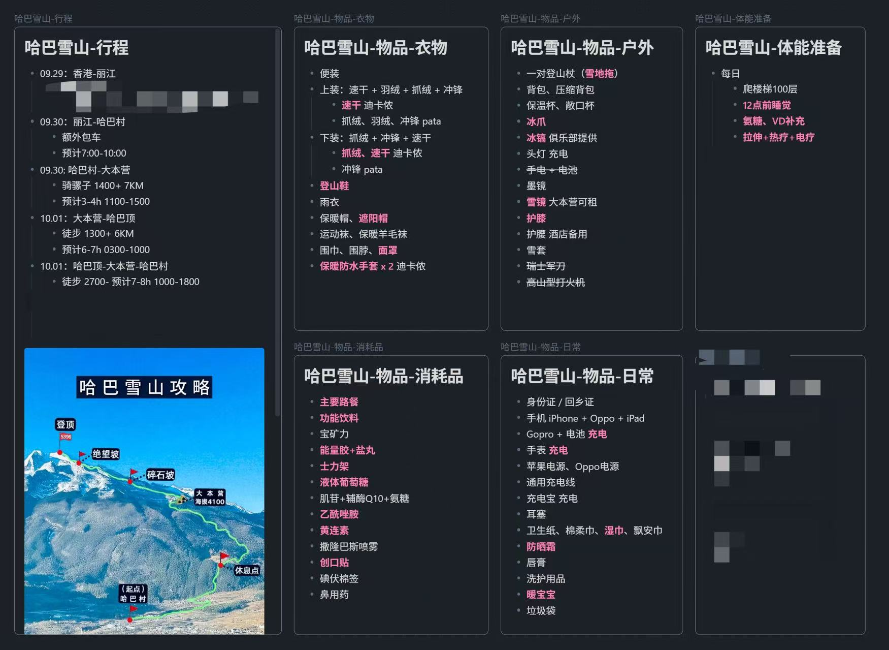
Day 0 Hong Kong → Lijiang (0–2400m)
I arrived at Lijiang airport after 10 p.m. By 23:15, after getting to the hotel, I spent the rest of the night hunting down packages, opening them, and sorting gear (reallocating and compressing what I’d take to Haba Village; leaving excess items stored at the hotel). I didn’t get into bed until after 1 a.m. Since I had to wake up early to head to Haba Village the next day, I only slept 4.5 hours.
Day 1 Lijiang → Haba Village → Base Camp (2400–4100m)
We set off at 6 a.m. I ate the breakfast my friend had ordered in advance on the car. I’d hoped to nap, but I stayed awake because I wanted to watch the scenery. It was overcast the whole way. We drove past Tiger Leaping Gorge; even through clouds and mist it looked beautiful. We didn’t stop, but it still felt like a quick preview—one day I’ll come back properly.
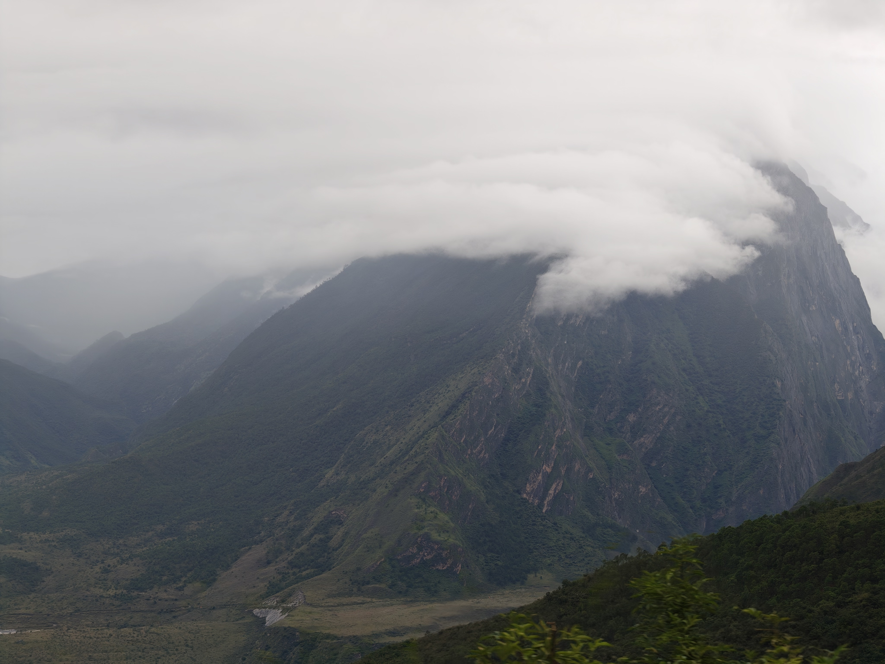
We reached the village around 8:30. It was drizzling, and I wasn’t feeling great—slightly dizzy. I thought: ok, here we go again. Another round in the fight against altitude sickness.
At the club, I drank a cup of fresh yak butter tea made by an older uncle, warmed up by the fire for a bit, and felt better. I repacked again: filled my thermos with a full cup of butter tea; put on my three-layer system and rain poncho; carried most of the rest on my back; and put a small portion into a woven sack (in hindsight, why not put most of it there? Maybe because a sack hanging on the side of a mule could make it unbalanced). Then I got on the mule, and the Haba Snow Mountain trip officially began.
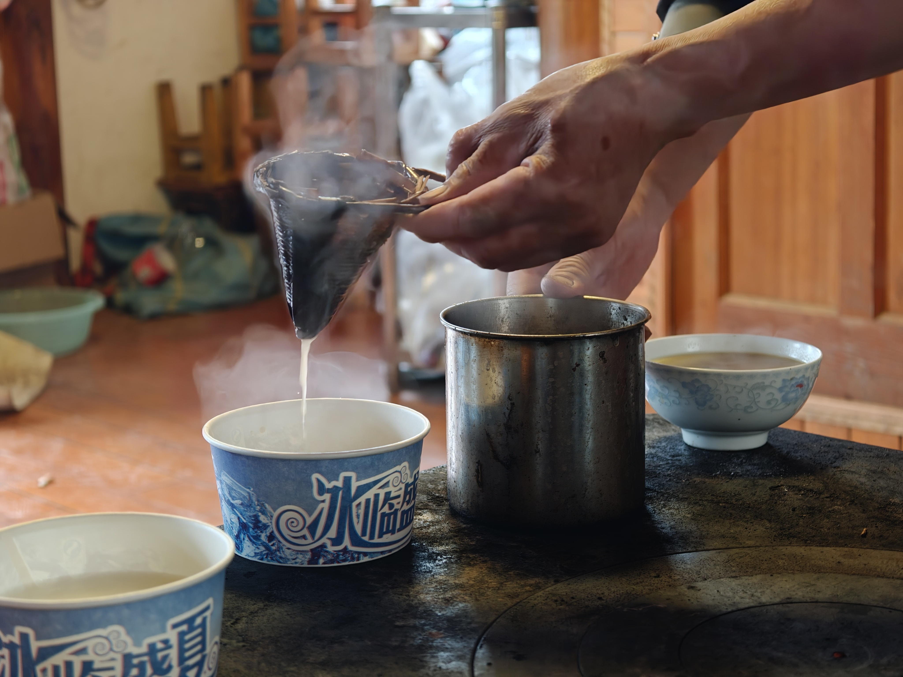
The mule trail is different from the hiking route, but the scenery is still great. A cold but not heavy rain kept falling. We moved through thin fog in the forest, bumping upward through mud. Most of the time there were no people besides us; occasionally we saw cattle and sheep. Only at a mid-way rest stop did we briefly cross paths with hikers. You can imagine how hard hiking must be in rain, fog, and mud like this. This segment gained about 1,200 meters in elevation.


After being jolted around until my senses went numb, I felt a burst of joy when the sharp outline of Base Camp finally appeared out of the fog. I hurried off the mule and walked in, only to discover Base Camp was larger than I’d imagined—quite lively, and it even had a small shop.


I spent the entire afternoon and first half of the night at Base Camp. A few observations:
-
Base Camp’s lodging was actually pretty good. The room I stayed in was cramped—outside of four bunk-bed frames, there were only three to four square meters of free space. Eight men in one room; it felt like going back to a student dorm. There wasn’t trash left behind, the bedding was wrapped in disposable plastic film, and the smell wasn’t strong—basic hygiene was there. There were power strips, but you need your own extension cord. The camp claimed to have Wi-Fi; some people said it worked. But neither my iPhone nor my OPPO could connect. There was no mobile signal on the mountain, and my friend was in the women’s dorm, so I was basically cut off from the outside world. 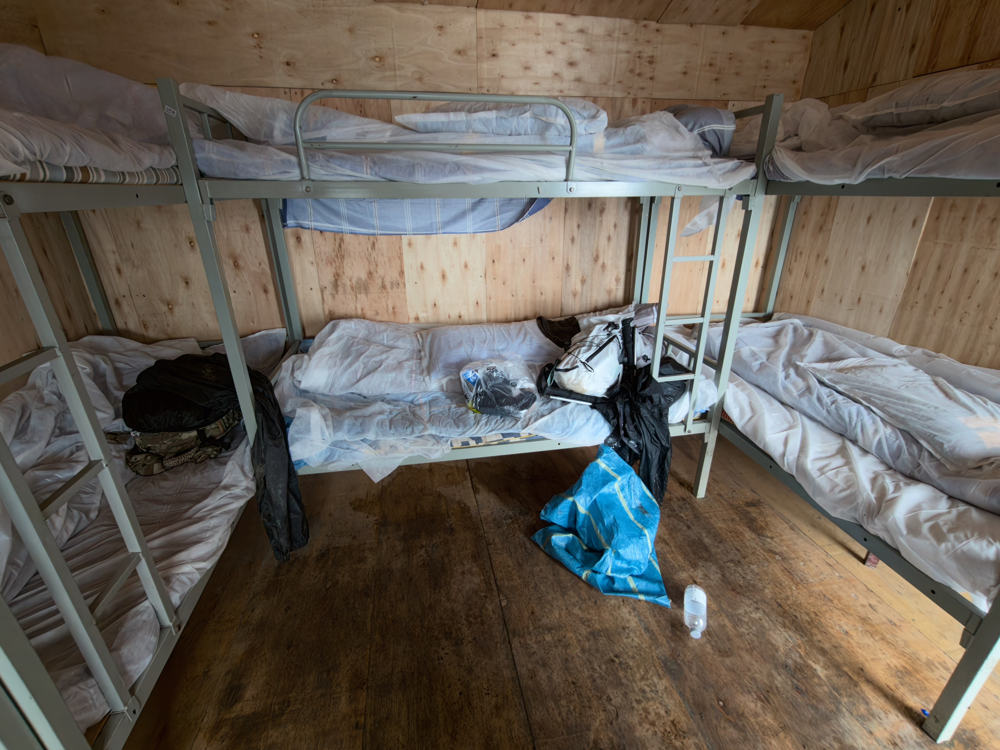
-
If I had to give a bad review, besides the network it would be the ground. The “ground” was basically not ground: imagine a wide field of gelatinous mud, more than ten centimeters deep, with a fishy stench, scattered with stones that might be natural or might be human-placed—that was it. Walking around camp, you had to make sure every step landed precisely on a stone; otherwise you’d gain +1 “stepping-in-poop” sensation. In half a day I must have hit +7 or +8. My shoes became increasingly unrecognizable. It might be much better on a dry day, but by the time we arrived it had already been raining for days.
-
Food, drink, and bathroom. The food was honestly good enough to deserve praise. Base Camp has multiple separate dining halls; which one you go to depends on your club’s arrangement. The one I went to was decent: both dinner and breakfast were buffet-style—meat, vegetables, rice, soup—quite rich; enough oil and salt; flavor was fine. The toilets were basically classic pit toilets. Even for what’s said to be the cleanest toilet in camp, don’t bring any unrealistic expectations.

-
Health check and briefing. Everyone had to do a simple blood pressure and blood oxygen check after arriving in the afternoon. Blood pressure was measured through an outer jacket; blood oxygen was with a finger clip. When I took mine I glimpsed a number “74 (?)”—I suspect what I saw was heart rate. It was a bit perfunctory, but at least they went down a name list one by one. After everyone arrived and checks were done, the briefing started. This part had real content. The guides covered safety and how to use the gear distributed afterwards: helmet, ice axe, harness + safety rope, and crampons. They especially emphasized: don’t let your helmet and ice axe leave your body; on dangerous sections of Despair Slope you must use the safety system together with the newly refurbished fixed rope; and don’t take any meds casually (including glucose), because the assistants (and you yourself) won’t be able to assess your condition accurately—and in worse cases, medication can exacerbate altitude symptoms.
There’s a lot to say about these mandatory pieces of equipment.
-
Helmet: your headlamp needs to clip onto it. Helmets don’t seal well, so they don’t block wind and water well. It’s better not to use it as the outermost layer. My setup that day: wool beanie on the inside, then helmet, then the hood of my rain poncho. My hardshell jacket was under the rain poncho. It had a hood, but it wasn’t designed to fit over a helmet, so I had to use the rain poncho hood as the outermost layer—tight, and not very comfortable.
-
Ice axe: an extremely useful piece of equipment. On the way up it can be used like a walking axe to leverage; during breaks it can support your body; above the snow line it can save your life by arresting a slide. But as for actual self-arrest technique, the afternoon briefing didn’t go into detail. We didn’t even have ice axes in hand during the explanation, and there was no practice. From personal experience, when you actually fall, you basically can’t react fast enough. Still: I strongly recommend never letting go, especially above the snow line—letting go is a huge risk (see the tragedy that happened recently on Nama Peak / 那玛峰).
-
Crampons: about as important as the ice axe. Without crampons, you simply can’t move on icy scree sections and the snowy parts of Despair Slope. A few years ago when I climbed Dafeng Peak (Siguniang Mountain), I used a cheap set of simple crampons with short teeth that I bought myself. This was my first time using a more professional set with long teeth—really like claws. The downsides are many: heavy; very annoying to put on (mostly annoying for the assistants); and there are safety risks (if your feet cross, the crampons can lock together and you fall—again, see the Nama Peak tragedy). But overall, the benefits are even greater, and I’ll mention them later.
-
Harness + safety rope: a set of gear that’s hard to put on. Official guidance requires using it on Despair Slope, but in reality I saw basically no assistant making anyone use it. You’re even far from the fixed rope on about half of the slope. My guess: for every short segment, an ascender needs to be unlocked and locked; most climbers are beginners and likely need an assistant’s help, which is too slow and time-consuming. Also, above the snow line there are hidden holes and traps under the snow; compared to the fixed-rope line, assistants will prefer routes that people have already packed down and made safer, or routes they’re more familiar with. For me, this safety system only really mattered on the steepest section when descending from the summit: the assistant held the rope to prevent me from sliding away, and I could also pull for extra leverage.
These mandatory items together probably weigh around 5 kg. If you carry your own pack on summit day, that weight is yours. If the assistant carries it, the only weight you can really save is roughly the weight of one set of crampons.
Since we’re talking gear, here’s the full clothing and equipment I carried during the summit push:
- Upper body: quick-dry base layer, fleece, down puffer, hardshell, long rain poncho
- Lower body: quick-dry pants, fleece, shell pants, gaiters
- Hands: two pairs of thin waterproof outdoor gloves, one pair of thick ski gloves
- Feet: two pairs of outdoor socks, two pairs of long wool socks, high-cut waterproof hiking boots, crampons
- Head: wool beanie, fleece balaclava, sunglasses, headlamp, helmet
Two details are worth highlighting:
-
Long rain poncho: not a cheap disposable one; a Decathlon poncho that cost 200+ RMB. It was the dark-horse MVP of this trip. During prep I kept it low priority. First, my shell jacket and pants have decent waterproofing, so the poncho felt less important; second, it doesn’t compress very small, so it takes space. On past trips to Yubeng and Dafeng Peak, the weather was sunny while hiking, so I never learned this lesson deeply. Before heading to Haba Village, I almost left it stored in Lijiang. But in reality, across the entire two days and one night, it was almost constantly raining or snowing. The shells were under huge waterproofing pressure. The poncho helped a lot and served as my outermost layer the whole time.
-
Socks + boots + gaiters + crampons: I’ll group these lower-body items together. Crampons are annoying to take on and off; once you put them on, you really don’t want to take them off mid-route. So when would you have to? When you need to change socks. The combined snow/water protection of boots + gaiters + crampons still can’t beat sustained rain and snow. Your socks will get soaked; your boots will take in water. The added weight is secondary. The bigger problem is heat loss and frostbite. While you’re moving during the summit push and the return to Base Camp, your feet generate plenty of heat. But once you’re back at Base Camp, you can change socks—yet if your boots are soaked, they won’t dry easily. Then if you go further down to the village and choose to ride a mule (most people do), your feet hang still for two or three hours. In low temperatures, wet boots turn into slow, steady damage-over-time. Later, during my “make-up lessons,” I learned a simple upgrade: wrap your feet in plastic wrap. You sacrifice breathability in exchange for waterproofing.
Back to that afternoon at Base Camp: after dinner and collecting gear, it was already past 6 p.m., and it was fully dark. After organizing summit gear, the only real task was rest. But rest wasn’t easy—two difficulties: time and altitude. Standard summit departure is 3 a.m., meaning you need to get up around 2. In the best case, you fall asleep immediately and sleep until 2—but that’s far from our usual circadian rhythm. And although altitude affects people differently, above 4,000 meters very few people feel nothing. That makes sleep much harder. For altitude prevention/relief, everyone agrees on one thing: drink water. Hydration helps metabolism and acclimatization, but drinking water means peeing. The nearest toilet was dozens of meters away; walking over pitch-black mud was miserable. So how much water to drink before sleep became a dilemma.
Maybe there’s no such thing as an easy high-altitude night. My memory goes like this: I lay down at 7:30 and closed my eyes. I drifted into a half-sleep quickly. I woke up thinking I’d slept a long time—then checked my watch: only 9:30. After that I couldn’t fall asleep again. The faint headache I’d had became obvious, and my watch’s oxygen saturation and heart rate numbers looked ugly. For warmth the dorm door was closed. A group of men + a small room means oxygen only decreases. For the next few hours, I fell into the classic loop of a headache-induced insomnia: keep trying to fall asleep, keep checking the time/heart rate/SpO₂, keep observing how others were doing—some people were actually snoring. Others were tossing and turning too. Some opened the door to “get oxygen,” then shut it again because of the cold wind, cycling up and down like taking turns on a stage. Bit by bit, those hours were ground down.
Day 2 Haba Snow Mountain (4100–5396–4100m)
Around 1 a.m., a sudden noise rose from outside. Listening closely, it sounded like heavy rain. I thought: well, the difficulty slider just got pushed higher again. Thankfully it eased up around 2. Almost everyone woke up earlier than scheduled, because sleep was so bad. When the room was finally noisy and someone turned on the light, I felt a kind of relief—at least I didn’t have to keep trying and failing. Someone said: “Seeing everyone doing this badly makes me feel reassured.” A guy from the Northeast who had hiked up from the village decided to give up on the summit right away.
I was in terrible shape too—my head hurt and felt swollen, extremely uncomfortable. I was seriously thinking of bailing. I forced myself to the dining hall, but I couldn’t eat anything; I managed a few bites of pickles and half a bowl of rice porridge. I filled my thermos with hot water and went back to the dorm. Sitting on the bed, I checked each item I needed to carry, waiting for my assistant.
While waiting, I decided: don’t think about anything; just start walking and see.
If so, then do whatever increases the probability of summiting. When I picked up my packed backpack and felt the 10+ kg weight, I almost immediately asked the assistant to carry it for me (money does help).
The moment I stepped outside, I pressed start on my watch to record the hike. Looking back later, that moment was 2:59.
Looking uphill, I could already see many wavering dots of light in the dark—lots of people had started early. I’d seen a similar scene at Dafeng Peak before, except that time we camped above Base Camp by 200 meters, so those lights were below us at departure. This time, I didn’t feel that first-time excitement. Experience really is a double-edged sword.
The rain stayed as light drizzle, and I wore my rain poncho, so it wasn’t a hard deterrent. From here it was only one job: go up. As I walked, I slowly drank a small can of Red Bull; the caffeine helped keep me awake after two nights of poor sleep. My assistant didn’t talk much. He’d wait slightly ahead or slightly behind me, which was perfect. I moved forward in silence. A couple of times I asked what time it was; he’d reply with something like “at this time we’re only at X…” I didn’t calculate carefully, but I figured we still had some margin before the cut-off time. So I kept going. The goal was clear: only stop when I absolutely had to.
Darkness, tangled headlamps, fine rain, cold wind, sweat, the sound of heavy breathing—keep going up. At some point I realized my head didn’t hurt as much as before—keep going up. Without noticing, the front got darker, and the lights behind became more numerous—keep going up.
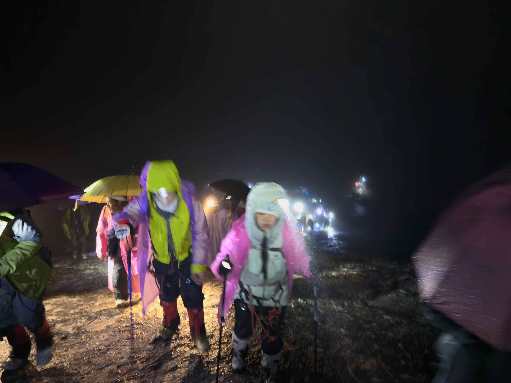
As people say, Haba’s summit push is really just nonstop uphill—almost no flat ground (4 km with 1,300 m gain). Beyond physical endurance, the challenge was cold rain and stronger wind the higher we went. When we reached the wind-shelter hut around 4,500 m, I started to shiver; the threat of hypothermia was very real. Even with a poncho and hardshell, my fleece was already half wet, though I couldn’t tell whether it was mostly outside-in or inside-out. The hut was packed with people changing clothes. At my assistant’s suggestion, I took off my shell and fleece, pulled my down puffer from the pack, put it on as an inner layer to trap heat, wore the fleece outside the down, and then put the shell back on. It’s kind of the reverse of the usual order, but it worked great—I stopped feeling cold quickly. Without it, I probably would have retreated right there. Later I learned that many people did, in fact, turn back around that area.
After changing, we went outside to find a relatively sheltered spot to refuel. Right then, I realized the thermos that had been stuck into the side pocket of my backpack was gone. Luckily, the assistant let me drink his hot water.
Keep going up. The sky began to lighten. Keep going up. The big rock slabs turned into a field of loose rocks.
The assistant found a sheltered spot, took off the backpack, and asked me to pull out my crampons. He told me to eat and drink enough and then leave the backpack behind. Only then did I realize: ah, we’re at that stage already. The coldness smacking my cheeks became more tangible—it was rain mixed with snow.
This is the turning point of the whole route, probably called the scree slope: the technical section starts here. Compared to the earlier monotonous uphill, this part was genuinely fun. I’d describe it as a kind of parkour where crampons, ice axe, hands, and feet are all used—like a jumping game. Crampons are both love and hate. I quickly learned firsthand what it means for crampons to lock together when your feet cross (again: the Nama Peak tragedy). The hem of my long poncho also risked being stepped on. But beyond those annoyances, the feeling crampons gave me was: power. Those complex, interlocking boulders—you can actually walk straight over them. Snow and thin ice on the rocks clearly recorded the tooth marks left by my assistant and the people before him (who were already out of sight), so you know someone has been there, but you still can’t quite believe it: what, you can step on that angle? The body convinces the mind before the mind agrees.
Maybe because it was interesting, this segment felt like it passed quickly. Jump-jump, and suddenly there were no more rocks ahead—only a vast white expanse. Despair Slope began. At this point I felt I’d reached a stamina bottleneck. Still the same: don’t think about anything; take as many steps as you can; keep going until you have to turn around.
Why is it called “Despair Slope”?
- Gradient: around 45 degrees, requires real control of your center of gravity
- Terrain: a snow slope. In October it felt like 20–30 cm of snow; uneven thickness; the top layer is looser and hard to stand firmly on. Snow covers the underlying terrain; hidden holes and cracks are dangerous. Some sections get packed by many feet and “mines” get cleared, but the surface also becomes more slippery.
- Gain: from 4,900 to 5,300 m—400 m of climbing. Combine altitude, gradient, and terrain, and this is absolutely not an ordinary 400 m.
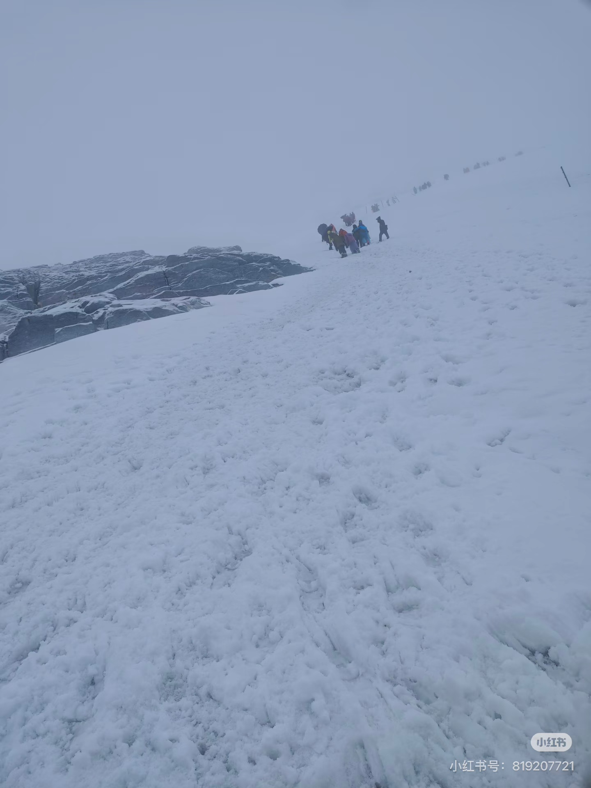
Snow slapped my face chaotically. I didn’t wear ski goggles; instead I had clip-on sunglasses over my prescription glasses. The lenses stayed blurred; I could barely see the path under my feet. Looking left and right, everything was a thick gray-white; visibility maybe tens of meters. Every upward step required kicking hard into the snow, stabilizing with crampons, planting the ice axe into the snow ahead, leaning my weight onto it, and then taking the next step. Axe in, left foot, right foot, stop—bend low for a breath—repeat. I fell several times because the snow wasn’t compacted, or because my crampons locked. With snow attacking from the ground and from the air, even with the poncho and other gear, my gloves (I’d already switched to the last pair) and boots were soaked. I could clearly feel the fabric swelling from absorbed water in both hands and feet.
As stamina drained, I had to stop after seven or eight steps, then five or six steps, resting in that bent-over, hands-on-axe posture to breathe. Lack of water was another big problem: both my water and my assistant’s water were left at the scree slope and we didn’t bring them up. I was so thirsty my mouth tasted bitter. Later I seriously considered stuffing a mouthful of untouched snow, but I didn’t know whether my throat and stomach could handle it. Fortunately, near the summit there were more people again. I saw a guy with a bottle of Coke on his pack. I asked him and he said he also had a bottle of water in his bag, and he let me gulp a few mouthfuls. Ice-cold life itself! He offered to give me the whole bottle; I refused and told him that water is far too precious in a place like this—no matter what, it’s better he keeps it.
Another thing I’m grateful for: my assistant had a very “introvert” vibe. Unlike some stories online, he didn’t drag or pull me step by step. He just demonstrated and led, letting me feel it and grind it out myself. He did get increasingly sharp-tongued (“Focus and walk properly.” “How did you mess your crampons up like this? Can’t fix it—fine, just like this.” “Stop talking to me, walk faster, get to the top and then you’ll be impressive.” “How can you be that thirsty? We’ve done this so many times, we know it well…”), but he never once urged me to retreat.
Finally I heard people ahead saying they could see the sign, that someone was taking photos. I looked up. All I could see was a small, blurry shadow in the upper-left of my vision. They said there were only a few steps left. But I still couldn’t move. And yet, step by step, I dragged myself up.
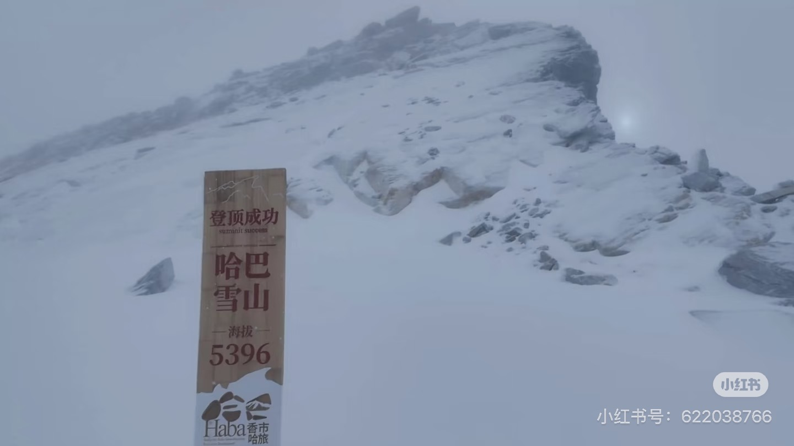
On the summit it was still a blur, and the wind and snow were even stronger. Taking photos was unbelievably fast. A few minutes of panting in a short queue; then I put down the ice axe, took off the helmet, put on the commemorative badge, handed my phone to the assistant, click-click, two shots done, phone back into the pocket. I didn’t even have the energy to point the camera anywhere else beyond the summit marker (and in the fog there wasn’t much to shoot anyway). The timestamp on the photo was 09:31. From 3 a.m. to 9:30 a.m.—a clean 6.5 hours.
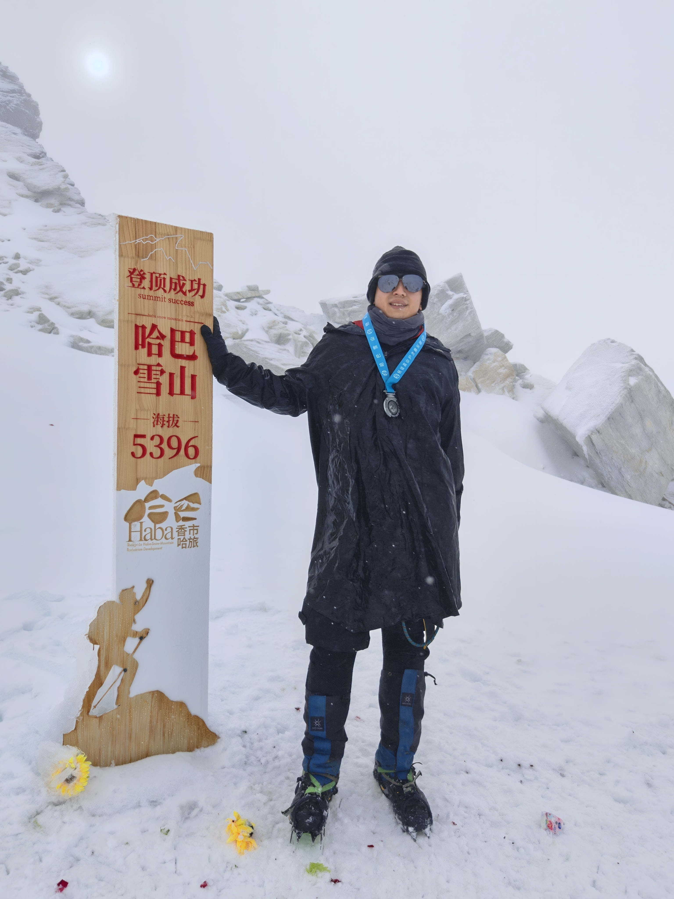
Summiting is only half the job. The problem in front of you is “getting back.” The freezing wind and snow, the severely depleted stamina, and my knee injury that could flare up at any time—all these threats killed any desire to linger and savor.
The eternal truth is: going up is easy; going down is hard. I descended Despair Slope, tumbling and scrambling the whole way. The ice axe helped less; my legs went soft. I slipped constantly. I fell backwards onto my butt; I slid forwards with both feet losing control and shooting several meters. The idea of “stomping your heels into the snow” felt like superstition: whenever your other foot hasn’t stepped down yet, you can’t be sure whether the current foot is really secure. I’d describe it as the snow negotiating with your feet. If the answer is “no,” you will inevitably fall. My assistant complained nonstop—and in the end, he slipped once or twice too.
On the most dangerous section, he held my safety rope and I grabbed it too, and we stumbled down like that—half human, half dog. Gradually I got a bit of downhill technique: don’t stare at your feet in fear of missing a step. Look farther away, and let your body sense and control the movement (maybe that also shifts your center of gravity slightly back).
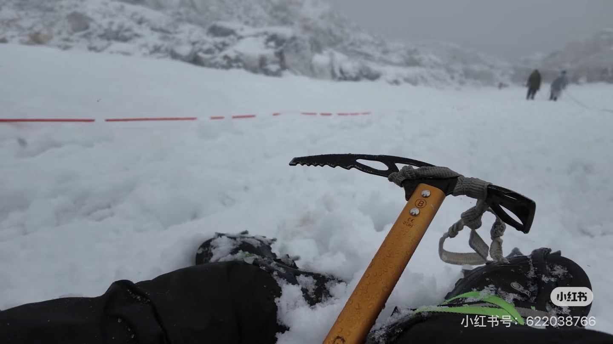
Even after a long time, looking far ahead I still couldn’t see the end of the slope. In the final section, perhaps because a small patch of sunlight filtered down, and because I was exhausted, I felt extremely sleepy—my assistant started yawning too. We could only hurry down; otherwise it would get more dangerous.
Finally we were back on the rock-strewn scree slope. By then I was at my limit. And because we were going down, a place that felt quick on the way up now felt bizarrely hard. Eventually we reached where we’d left the gear. I drank a few big gulps of water that had already begun forming icy slush, and took off the crampons.
Following my assistant’s suggestion, I took off my fully soaked gloves and tucked my hands into my poncho sleeves to warm them (I was skeptical, but it worked). Then we kept going down.
Once we were on a section without snow, I handed my ice axe to the assistant to carry. Then I pulled out my secret weapon (in video-game terms: an “S-rank” item): trekking poles. For the first time I truly felt trekking poles = happiness. With poles, for no clear reason, strength started flowing back—maybe because the familiar rhythm of regular hiking returned. Even though the assistant walked faster and faster, I could keep up closely, and I finally had spare energy to take out my phone and shoot a few photos.
On the way I met another assistant. Seeing me walking with such glee, he half-intentionally led me onto harder terrain to “challenge” me, which escalated into a big slope where he wanted me to run down… and of course, my knee finally started hurting. But for it to only start hurting here meant it had performed at 300% that day. My stomach started to reflux in waves and I felt an impending bout of diarrhea; I forced it down with water. Base Camp was already visible to the naked eye, yet it still took forever to reach.

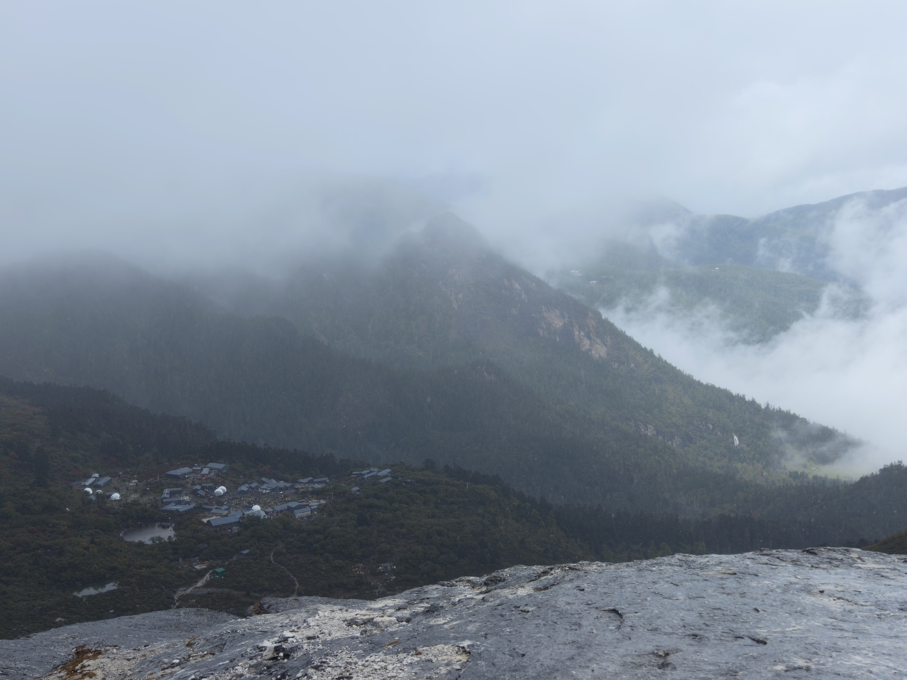
In the later segment, my assistant surged ahead and gradually pulled tens of meters away. But eventually he slowed down and was willing to chat a bit. It turned out he wasn’t local to Haba; he was from elsewhere in Yunnan. He used to hike a lot, and later turned it into work to make money. He explained that he’d been trying to motivate me with “provocation” earlier—he didn’t truly think I was that bad—and that he thought I had a lot of grit. He also said the weather was bad that day, but we still made it up.
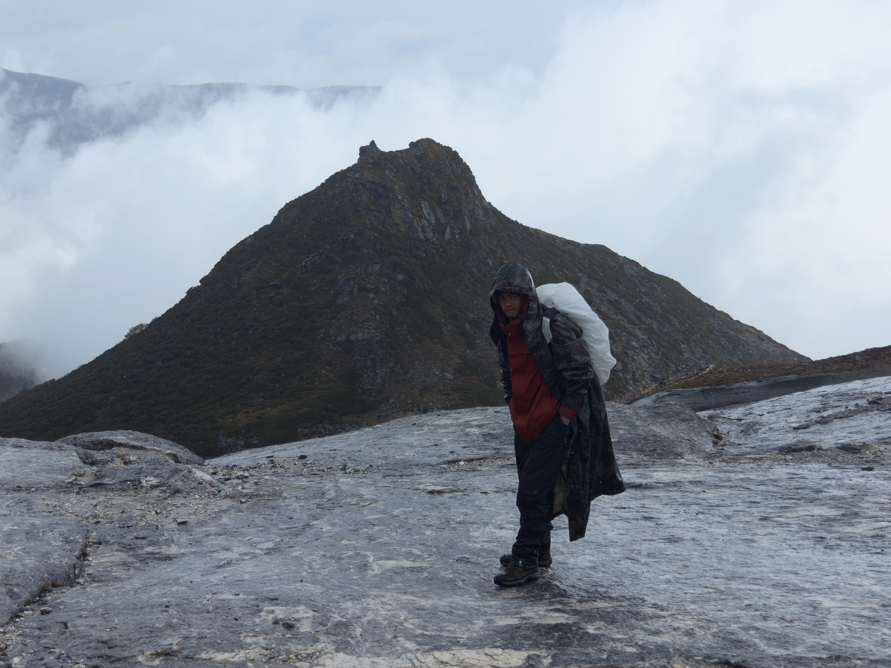
We kept walking and walking, and finally reached Base Camp. It was 14:30. Another clean number. The Haba hike totaled 11.5 hours.
The way back (4100–2400–1900–0)
Base Camp was quiet by then. Most people had already left. Based on the assistants’ estimate that day and what I later gathered from Xiaohongshu, the summit success rate was around 15%–20%—roughly 45–60 people out of 300. Those who had retreated early to Base Camp had already continued down.
There was no phone signal, and I couldn’t contact my friend. I hadn’t seen her since after dinner the night before, and I had no idea how she was doing. After returning the gear, I asked around but got nowhere. Someone suggested I go warm up in the little shop. It was packed with summit returnees. I finally squeezed into a corner and warmed my gloves for a bit, then went back to the dorm, changed into a dry pair of socks, and started packing.
The dorm floor was a mess—footprints everywhere, trash everywhere. Only then did I discover my thermos was lying safely on my bed. So it must have slipped off my backpack when I set off because I hadn’t tied it down. Another huge lesson.
At this moment, the guy on the bunk opposite came in. After a few lines of chat, I learned he hadn’t summited. I was surprised—when we talked the night before, I knew he had more experience, and he was physically solid too. I guessed he probably burned too much energy during the Day 1 hike; two rainy days on Haba are much higher intensity. He was also surprised that I’d made it, since anyone could see how bad my state was when I left.
My stomach refluxed again. I hurriedly chewed two tablets of antacid (Daxi / 达喜) to suppress it. Fortunately I didn’t feel like I needed to go to the toilet anymore.
Finally our club people showed up and told me my friend had already gone down, and I should ride a mule down too. Coincidentally, there was only one other person riding a mule with me—the guy who gave me water up on the mountain. It turned out we were guests of the same club. His two friends also didn’t summit and had retreated early.
The mule handlers were the same uncle who’d made me butter tea the day before, and his wife. They looked to be over sixty. On the one hand I felt it was really not easy; on the other hand I admired them.
To go faster, they chose another route—steeper. With precipitation on the mountain, muddy water ran downhill continuously. The mules kept slipping. My mule even lunged forward several steps once, and the uncle fell once too. Sitting on the mule, all I could do was hold on tight and offer verbal concern; I felt powerless.
The socks I’d changed into at Base Camp were soaked again. Both pairs of gloves still weren’t dry. My hands and feet were cold, and I felt slightly chilled overall. I’d forgotten to refill my thermos, so the water inside was only lukewarm. I endured it.
At the earlier rest stop, we ran into my friend’s team coming down via another route. So our shortcut really did save time—we caught up to them. I learned she’d made it to 4,900 m; the assistant said they didn’t have enough time and had to turn around.
After we finally got back to Haba Village, my first priority was dealing with my feet. They were numb with cold; I worried I might have severe frostbite. Luckily I borrowed a basin of hot water, soaked my feet, and it seemed fine.
I obviously couldn’t wear my boots anymore. I borrowed a pair of slippers, then bought a new pair at the club to change into (they’re now my swimming slippers—an unexpectedly practical mountaineering souvenir). A club guy gave me a big woven sack, and I stuffed my mud-caked shoes and socks and my rain poncho into it. I had no dry socks left, so I boarded the car back to Lijiang barefoot in slippers.
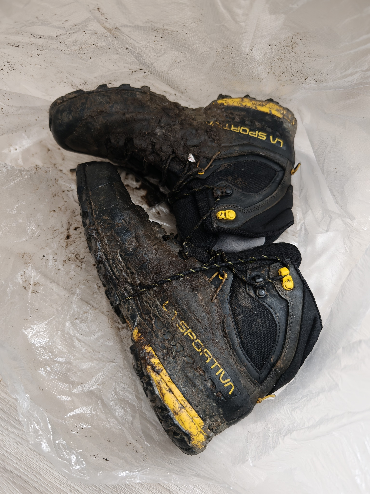
On the drive, a sudden strong wave hit me. I tore open a vomit bag and emptied my stomach, which made an aunt in front tell the driver to slow down—she said I made her dizzy. I explained that it was probably altitude sickness. But after that vomit, I felt strangely refreshed. So the earlier stomach discomfort really was an altitude symptom after all.
In the following days in Kunming, besides being sore all over, the unprotected parts of my face peeled in patches—probably from cold wind. Another lesson.
By rights the trip consumed a lot. Yet when I finally got back to Hong Kong and weighed myself, I was somehow 0.5 kg heavier than before. My explanation: Yunnan food is too good.
Aftertaste
There’s an animated film called The Summit of the Gods (神之山岭). I’d saved it for years without watching. Three days before departure, I finally watched it, and it was deliciously on-theme.
After that, on planes and trains, I read the manga. I didn’t even get through two volumes before pausing for two months after returning to Hong Kong. Then, at the end of December, I restarted from the beginning during the holidays. After re-reading the first two volumes, I recovered the motivation to continue writing this memoir, which I’d already mostly drafted in Kunming. Interestingly, I would write for a while, then read for a while. Sometimes I’d just finished describing a climbing detail or feeling, and then I’d see something corresponding in the manga. The manga also helped me recall more details to add to the text. It was a rare kind of resonance.
The film came from the manga, and the manga’s original source is a novel. The author, Baku Yumemakura (梦枕獏), wrote the Onmyoji (阴阳师) series, which I used to love. I never expected to meet him again years later around the topic of mountains—nor did I know he was a serious outdoorsman who had been to the Himalayas many times. I also discovered Jiro Taniguchi (谷口治郎), a god-tier manga artist. The manga precisely recreates the oppression and awe that snow mountains impose, and its portrayal of human themes is incredibly mature.
This story once again (I can’t even count how many times) reminded me of that classic line from Attack on Titan: if a person isn’t intoxicated by something, it’s as if they can’t go on living.
I remember on 10.2, on the train from Lijiang to Kunming, I was deeply moved when I saw the protagonist survive a desperate situation. That night, I spent most of my time striking while the iron was hot and writing this memoir. I woke at 4 a.m. and couldn’t fall back asleep. I searched everywhere for posts and videos about Haba Snow Mountain. I accidentally ran into a Haba video on Bilibili; the uploader was exactly the travel/photography blogger I had summited Dafeng Peak with back in 2021. So I revisited his old Dafeng Peak video too. I appeared in it, and there were a few aerial shots I’d contributed.
Watching those videos, I remembered so many details: how I re-injured my knee the day before the peak, and how I limped through the two days, enduring pain to reach camp and then the summit. At the end of the video, when it asked why people climb mountains, my emotions surged and I cried hard.
Why? Probably because after years of being haunted by injuries, I overcame something again. It’s a strange feeling. Like I wrote in my WeChat Moments on summit day: I didn’t have a strong desire to win—I just did it. Don’t think about anything. Move until you have to turn back. Like the protagonist in The Summit of the Gods: as long as life continues, he will keep climbing.
That blogger friend I mentioned has updated recently with climbs like Manaslu, Lobuche, and Muztagh Ata—still wearing his signature Mario “boss” hat, shooting cinematic photos among 7,000 m and even 8,000 m ridgelines. Meanwhile, I overcame old injuries, long COVID, self-doubt, and low agency, and completed this Haba summit (a simplified version).
Put those two sentences side by side, and of course we start comparing. Clearly, by outcome, he surpasses me by far.
But I think: if a person’s sense of worth depends entirely on the result of a single thing, life becomes unbearably painful. Even if you sometimes get what you want, the moment you obtain the result, that result stops mattering. Human eyes will always look toward the next mountain.
There are three types of transcendence worth pursuing: surpass yourself, surpass the people you know, and surpass humanity’s limits. When we talk about humanity’s limits, it feels far away, and we’re less likely to cling to it. But “surpassing the people you know” is very tempting. And yet: beyond the mountain there is another mountain; beyond the person, another person. When you surpass one mountain and one person, you will inevitably meet the next mountain and the next person. Doesn’t the end of this road ultimately equal surpassing humanity’s limits? That sounds too exhausting, with little chance of a satisfying ending.
Perhaps it’s better to keep things lighter: treat it as a game, and let yourself be absorbed by it. Let “comparing with others” fall back to being merely a tool to calibrate and measure the gap between you and your goals, without being trapped by the gap. One step forward or one step back is all in the heart. Everything is ordinary. As long as you act, joy and delight will naturally follow.
Why climb mountains? For challenge? If so, you can climb stairs too—you can keep going, and even do 10,000 meters of continuous vertical gain. For scenery? Then beautiful landscapes that are easy to access are everywhere, and many times, like me, you may go and still see nothing. Is it because, as the Everest climber George Mallory famously said, “because it’s there”? Or, as The Summit of the Gods suggests, because “I am there”?
I think it’s all of the above. Challenge, and scenery. Because both I and the mountain exist, a relationship can form. Like people, mountains are uncontrollable; they have their own temperament. I prefer to see climbing as a dialogue, a collision—a game between person and mountain, where the mountain is a player, not merely a setting. You can’t control the mountain, and the mountain won’t always be able to stop you.
Of course, everyone has their own understanding of mountains. As long as you can still find value and meaning in it, keep climbing—until you truly have to stop.
Finally, two points that aren’t novel, but I think are important:
-
Perfect timing: perhaps perfect timing doesn’t exist, because we can’t define what “perfect” is, and we can’t quantify the perfection of a moment. If perfect timing truly exists, we may have already missed it. If it’s missed, is it still perfect? Therefore, if the cost of action isn’t huge, go now. Action produces more information (Action Produces Information), making optimization possible; every step makes the next step more certain. If you don’t start, you stay where you are forever. Like this Haba trip: I didn’t feel fully prepared, but I still went. Whether the summit succeeds or fails, you’ll realize you have some capability, and you’ll also see your shortcomings and improve—laying groundwork for the next round.
-
Risk management: just because something hasn’t happened doesn’t mean it doesn’t exist. Don’t be a random-walk fool who keeps poking at luck. A single success doesn’t mean you’re “stable” or you’ve “ranked up.” Maybe we only happened to land on the small-probability side in an over-level challenge, while in 100 parallel worlds, the other 99 are failures. Over enough repetitions, luck averages out: if you keep probing, you’ll get closer and closer to the true odds. And some failures are the kind you can’t afford even once. In a long multi-round game, don’t think only about this round. Always leave margin: more water, more stamina, an extra battery, one more reminder. Don’t go all-in betting on mountain weather. If you’re not trying to push limits, don’t casually test the limits.
May you and I understand the costs, understand the returns, understand that everything is probability—and then enjoy every present moment.
2026.01.20
Bonus: Creating with AI
DeepSeek
This memoir about Haba Snow Mountain contains rich first-hand experiences and practical details. Below is an organized summary of the practical information and lessons learned:
1. Practical information and experience summary
1) Itinerary
- Tight schedule: If you compress the trip into two days and one night (Lijiang → Haba Village → Base Camp → summit push → return), you’ll have less time to acclimatize. It’s recommended to add a rest/acclimatization day if possible.
- Transportation:
- Direct flights from Hong Kong to Lijiang can sometimes be surprisingly cheap (e.g., Hong Kong Airlines HK412).
- From Haba Village to Base Camp, you can choose to ride a mule (saves energy; good for tight schedules or bad weather). Hiking is much tougher.
- Key time points:
- Summit pushes usually depart around 3 a.m.; you need to organize gear in advance and rest early.
- After descending, return to Lijiang as early as possible to avoid night driving.
2) Pre-trip preparation
- Gear preparation:
- Make a list early and use multiple channels (Taobao, physical stores, etc.).
- If there’s weather risk (e.g., a typhoon), ship gear directly to your Lijiang hotel for reception (coordinate with the hotel in advance).
- It’s better to over-prepare; key items (waterproof clothing, crampons, etc.) must be reliable.
- Fitness training:
- Short-term prep can focus on stair climbing (about 100 floors per session; ~300 m gain) to simulate high-altitude ascent.
- Protect your knees during training to avoid injury.
- Ensure adequate sleep and adjust your schedule before departure.
- Project management:
- Use a kanban tool (e.g., Obsidian) to track gear and itinerary.
- Communicate closely with teammates and clarify roles.
3) Gear experience
- Necessary gear:
- Rain poncho: A long rain poncho (e.g., Decathlon) is important, especially in persistent rain/snow; it can serve as the outermost layer.
- Crampons: Professional long-tooth crampons are essential on icy scree and snow slopes, but be careful about feet crossing and locking.
- Ice axe: Useful for uphill leverage and self-arrest; never let it leave your hand.
- Safety rope / harness: Assistants may not strictly enforce use, but it can still matter on dangerous descents.
- Layering:
- Upper body: base layer → fleece → down puffer → shell → rain poncho
- Lower body: pants → fleece → shell pants → gaiters
- Hands: thin waterproof gloves + backup thick ski gloves
- Feet: thick socks + high-cut waterproof boots + crampons; consider plastic wrap for extra waterproofing
- Thermos: Tie it down securely to avoid losing it.
- Base Camp conditions:
- Lodging is relatively basic (multi-person rooms; electricity; poor network).
- The ground is muddy during rainy periods; wear grippy, dirt-tolerant shoes.
- Food is decent; toilets are pit toilets—set expectations accordingly.
4) Altitude sickness and health
- Prevention/relief:
- Drink more water to support metabolism, but balance it before sleep to avoid frequent bathroom trips.
- Rest after reaching altitude; avoid intense exertion.
- Headache is common; don’t panic—adapt gradually.
- Summit day:
- Even if you feel awful and have no appetite, force some intake (e.g., porridge, pickles).
- Add/remove layers promptly to prevent hypothermia (e.g., put on down at ~4,500 m).
- Bring enough hot water, energy drinks, and snacks.
- After descending:
- Change wet socks quickly to prevent frostbite.
- GI symptoms (vomiting/diarrhea) may be altitude-related; consider bringing antacid meds.
5) Summit and descent techniques
- Uphill:
- Keep your own pace; don’t blindly chase others.
- On the scree slope, use crampons to step directly on rocks—place feet securely.
- On Despair Slope, use a steady rhythm: ice axe in → kick steps → shift weight forward.
- Downhill:
- On snow slopes, keep your center of gravity slightly back; look farther away instead of staring at your feet.
- Trekking poles greatly save energy and protect knees on non-technical terrain.
- If you have knee issues, slow down on descents; avoid running or jumping.
- Safety points:
- Follow assistants, but keep your own judgment.
- On dangerous sections, connect to the fixed rope.
- Retreating in bad weather (strong wind/snow, low visibility) is not shameful.
6) Other tips
- Phone and comms: No mobile signal at Base Camp; Wi-Fi is unreliable—prepare to be offline.
- Mule descent: Feet can get cold when hanging still; keep them moving if possible or use a heat pack.
- Packing: Keep your summit pack light; leave non-essentials at Base Camp.
- Environmental awareness: Pack out your own trash.
2. Core lessons
- Over-prepare on gear; never skimp on critical items
- Acclimatization matters
- Never underestimate weather
- Energy management matters more than raw fitness
- Assistants help, but you’re responsible for your own safety
- Psychological readiness can matter more than physical readiness
- Action beats waiting for “perfect timing”
3. Who this is for
- First-time 5,000-meter snow-mountain climbers
- Outdoor enthusiasts focused on practical experience and risk management
- Hikers who want detailed, real-world notes on high-altitude climbing and gear
Gemini-3-Pro
This is a very detailed, highly personal mountaineering memoir. The author successfully summited Haba Snow Mountain under an extremely compressed schedule (two days and one night) and harsh weather (typhoon-periphery effects; rain/snow). It contains many valuable lessons and real-world takeaways.
To make the practical information easier to absorb, I organized it into a “Haba Snow Mountain Speed-Ascent Field Debrief Dashboard.” The HTML page includes itinerary analysis, gear red/black lists, fitness prep, and key lessons.
Visualization notes
- Itinerary and altitude overview: A clear picture of the “special forces” style 2D1N schedule, emphasizing the risks of rapid altitude gain.
- Gear field review: Categorizes items into “dark horse (unexpectedly great),” “core (must-have),” and “lessons (needs improvement).”
- Key route segments: Breaks down the difficulties of the “scree slope” and “Despair Slope.”
- Experience and lessons: Extracts practical suggestions on altitude sickness, logistics, and body care.
You can save the code as an .html file and open it in a browser, or just view the rendered layout idea.